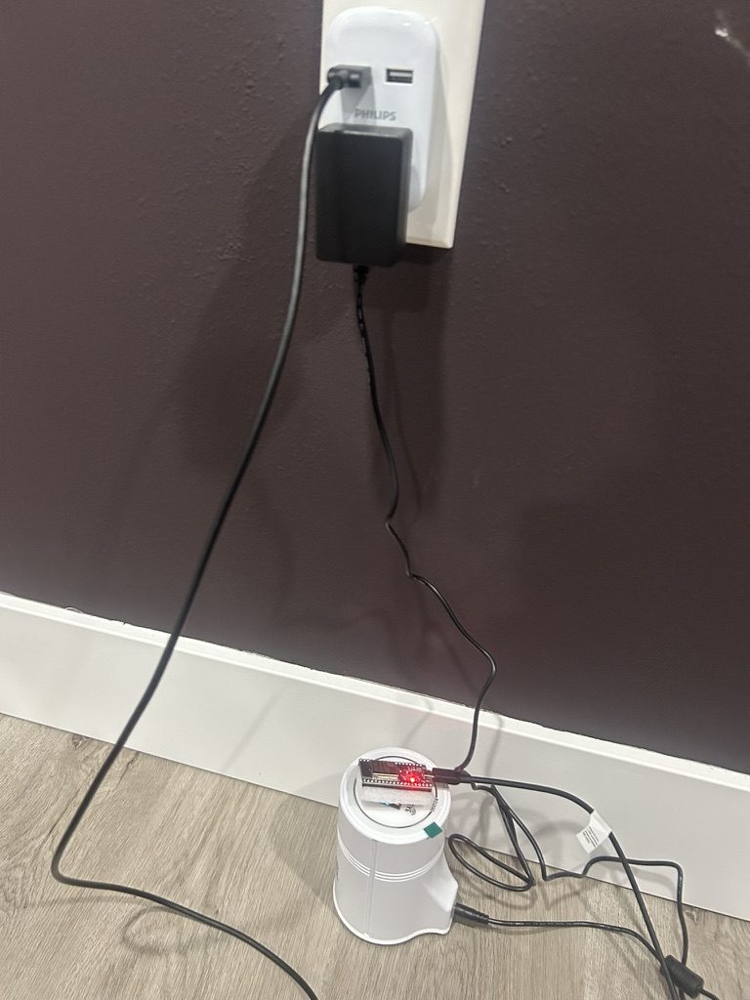

Every ClearSkies sensor is assembled from off-the-shelf components. No proprietary hardware. No vendor lock-in. Build cost: $124, provided free to recipients, funded by donations.

| Component | Part / Version | Notes |
|---|---|---|
| Microcontroller | ESP32 Dev Board | Wi-Fi + Bluetooth dual-core; runs ESPHome; widely available for ~$8–12 |
| Radon Sensor | RD200 (refurbished) | Pulsed ion chamber; manufacturer-rated 10-min polling cycle; communicates over UART serial |
| Firmware | ESPHome | YAML-configured; handles polling, unit conversion (cpm → pCi/L), and cloud push; OTA updateable |
| Connectivity | Wi-Fi (2.4 GHz) | Standard home Wi-Fi; no hub or gateway required; sends data directly to Firebase endpoint |
| Cloud Storage | Firebase Realtime DB | Each reading timestamped and written to a structured JSON tree; free tier sufficient for current scale |
| Dashboard | TagoIO | Pulls from Firebase; renders live time-series charts; shareable public dashboard link |
Refurbished RD200 sensors are sourced from verified suppliers and tested before deployment. Commercial continuous radon monitors typically cost $200–$600. ClearSkies achieves comparable accuracy at a fraction of the build cost, and gives them out for free, because safety shouldn't be gated behind a purchase.
Every 10 minutes, the RD200 completes a measurement cycle. ESPHome reads the count, converts it, and pushes the result upstream with no manual intervention required.
The firmware is written as a YAML configuration file, readable and auditable by anyone. It defines the UART bus, polling interval, conversion formula, and Wi-Fi credentials. Updates can be pushed over-the-air without physical access to the unit.
Each reading is stored with a Unix timestamp key under a per-device path. The database is structured for efficient time-range queries and can support dozens of units on a free Firebase plan. Data is retained indefinitely.
TagoIO pulls data from Firebase and renders live charts, historical graphs, and threshold alerts. A shareable public link means homeowners and community members can check readings without creating an account.
The full hardware design, firmware configuration, and setup guide are available to any community group, school, or individual who wants to deploy their own unit. We can help you get started.
Reach out to the ClearSkies team. We'll walk you through parts sourcing, firmware setup, and getting your dashboard online.